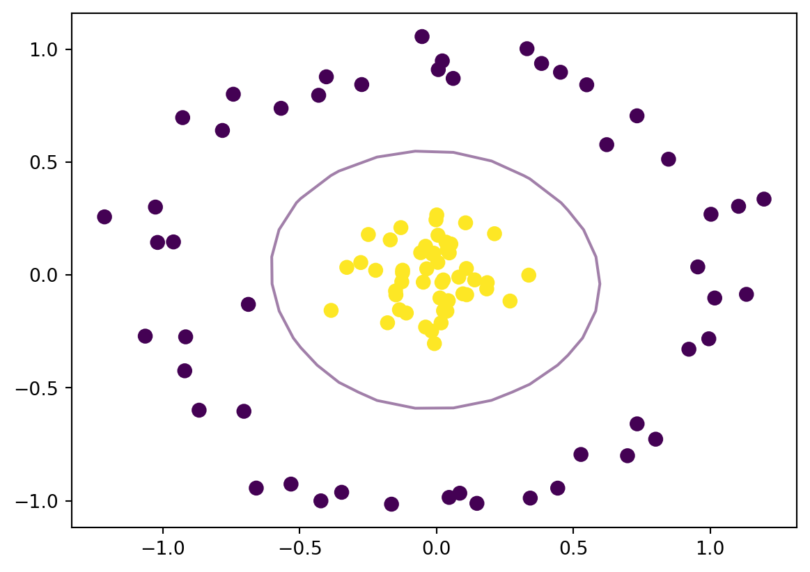

SVMs are among the most researched and popular classifiers, and have deep connections with fundamental results in functional analysis. Unlike logistic regression, they work also when the classes are linearly separable, and through kernelization, they can identify nonlinear boundaries between classes.
Consider observations \((y_i,x_i)_{i=1}^n\) with \(y \in \{-1,1\}\) being the dependent variable and \(x \in \mathbb{R}^p\) the covariates. A hyperplane in \(\mathbb{R}^p\) is the set of points \(x \in \mathbb{R}^p\) with the property that \(h(x)=0\), where \(h : \mathbb{R}^p \to \mathbb{R}\) is an affine function \(h(x):=\beta x +\beta_0\) with \(\beta \in \mathbb{R}^p, \beta_0 \in \mathbb{R}\) , and \[\beta x=\langle \beta,x \rangle := \sum_{j=1}^p \beta_j x_j \tag{1}\] is the inner (dot) product of the vectors \(\beta=(\beta_1,\ldots,\beta_p)\) and \(x=(x_1,\ldots,x_p)\).
A hyperplane divides the \(\mathbb{R}^p\) space into two half-spaces. SVMs find the hyperplane that “best separates” the two classes \(\{-1,1\}\). Roughly, (most of the) class \(1\) observations fall in the half-space \(\{x\: |\: h(x)>=0\}\), while (most of the) class \(-1\) observations belong to the half-space \(\{x \: | \: h(x)<0\}\). A new observation with covariates \(x\) is will be classified as belonging to class determined by the sign of \(h(x) = \beta x +\beta_0\). While SVMs apply directly only to binary classes, they can be turned into a multiclass classifier using the one-vs-one pairwise classifications of observations, and using majority voting to determine the most likely class.
Linearly separated classes
The two classes can be perfectly separated by the hyperplane \(h\) if \(y_i h(x_i) \ge 0\) for all \(1 \le i \le n\).
Denote by \(\lVert \beta \rVert := (\sum_{j=1}^p \beta_j^2)^{1/2}\) the Euclidean norm of \(\beta\). The distance from a point \(x\) to the hyperplane \(h\) can be calculated by selecting a point \(x_0\) belonging to the hyperplane and projecting \(x-x_0\) on the unit norm vector \(\beta/\lVert \beta \rVert\) orthogonal to the hyperplane, \[
\frac{\lvert \beta (x-x_0)\rvert}{\lVert \beta \rVert} = \frac{\lvert \beta x +\beta_0 \rvert}{\lVert \beta \rVert} = \frac{\lvert h(x) \rvert}{\lVert \beta \rVert}.
\tag{2}\]
If \(\beta\) is normalized to have unit norm, \(y_i h(x_i)\) is the distance from the observation \((y_i,x_i)\) to the hyperplane, or the margin for this observation. With perfectly separable classes, we want to find the optimal-margin hyperplane, which is the hyperplane with the largest distance even from the closest points: \[
\begin{aligned}
\max_{\beta,\beta_0,M} M \\
\text{s.t. } y_i \frac{\beta x_i +\beta_0}{\lVert \beta \rVert} \ge M.
\end{aligned}
\tag{3}\]Figure 1 illustrates the case of perfectly separable observations lying the plane (\(p=2\)), where hyperplanes are lines. The observations with optimal margin which is the distance to the hyperplane marked by the blue line, are circled. They are called support vectors, giving the algorithm its name. The support vectors determine entirely the optimal-margin hyperplane and any points with higher margin (further from the separating hyperplane) do not affect the optimal solution to Equation 3.
Code
import numpy as npimport matplotlib.pyplot as plt# Rotation matrix, 45 degrees counterclockwisea =2**.5/2A = np.array([[a,-a],[a,a]])rng = np.random.default_rng(10000)def gen_data(spread=.2,nobs=100,rng=rng): X = (2*rng.random((nobs,2))-1) #Obs x=(x_1,x_2) assigned to class 1 (-1) if x_2 >= (<) 0 y =2*(X[:,1]>=0)-1#Inject spread between classes X[X[:,1]>=0,1]+=spread/2; X[X[:,1]<0,1]-=spread/2if spread>0:# Support vectors svidx1 = rng.choice(np.where(X[:,1]>0)[0],2,replace=False) X[svidx1,1] = spread/2 svidx_1 = rng.choice(np.where(X[:,1]<0)[0],1,replace=False) X[svidx_1,1] =-spread/2 svidx=np.concatenate((svidx1,svidx_1))return (np.dot(X,A.T),y,spread/2,svidx)else:return (np.dot(X,A.T),y,spread/2,None)X,y,M,svidx = gen_data()fig,ax = plt.subplots()ax.scatter(X[:, 0], X[:, 1], c=y, s=50)xfit = yfit = np.linspace(-2**.5, 2**.5)ax.plot(xfit, yfit,color='blue')ax.set_xlim(-2**.5, 2**.54)ax.fill_between(xfit, yfit - M/a, yfit + M/a, edgecolor='none', color='lightgray', alpha=0.5)ax.scatter(X[svidx, 0], X[svidx, 1], s=150, linewidth=1, edgecolors='black', facecolors='none')plt.show()
In general, perfect separation is impossible and we are content to find a “soft”-margin classifier solving the relaxed problem \[\begin{aligned}
\min_{\beta,\beta_0,\xi_i} \frac 12 \lVert \beta \rVert^2 + C \sum_{i=1}^n \xi_i, \label{eq:rkhs:11}\\
\text{s.t. } \xi_i \ge 0, \; y_i(x_i \beta +\beta_0) \ge 1-\xi_i, \forall i \notag \end{aligned} \tag{5}\] The tuning parameter \(C\) controls the softness of the margin, and %(_i)$ are called slack variables. A large \(C\) implies less overlap.
Equation 5 can be rewritten as an unconstrained optimization problem, \[
\min_{\beta,\beta_0} \frac 12 \lVert \beta \rVert^2 +C \sum_i [1- y_i(x_i \beta +\beta_0) ]_+, \tag{6}\] or, in the familiar form of minimizing a penalized loss function, \[
\min_{\beta,\beta_0} \sum_i [1- y_i(x_i \beta +\beta_0) ]_+ + \lambda \lVert \beta \rVert^2, \tag{7}\] where \([1-y_i h(x_i)]_+:=\max\{1-y_i h(x_i),0\}\) is known as the hinge loss, operating on the margin \(y_i h(x_i)=y_i(x_i \beta +\beta_0)\). It measures the cost of \(x_i\) being on the wrong side of the separating hyperplane.
The class below implements from scratch an SVC in python, using only numpy. It mimics the widely used interface of sklearn, and solves the problem in Equation 7 using either stochastic gradient descent (SGD) or the BFGS optimizer in scipy.
For the separated observations case in Figure 1, both the SGD and BFGS produce separating hyperplanes with intercepts close to zero and slopes close to 1, as expected, similar to scikit-learn, which uses the dual problem Equation 12 to be detailed next, instead of Equation 7
SVMs can be extended to identify highly non-linear boundaries through kernelization (the “kernel trick”). The idea is to map the covariate space \(\mathbb{R}^p\) into a higher dimensional space \(H\), and find a separating hyperplane in the bigger space. For example, with 1-dimensional covariates, if observations in class \(1\) fall in the interval \((-1,1)\) while observations of class \(-1\) belong to \((-3,-2) \cup (2,3)\), they cannot be linearly separated (cutting the real line in two). However, if we map the covariate \(x\) into a point \((x,x^2)\) in a 2-dimensional space, any horizontal line with height between 1 and 4 linearly separates the observations.
We show in the next section that given a function \(K: \mathbb{R}^p \times \mathbb{R}^p \rightarrow \mathbb{R}\) with some suitable properties (a kernel), there exists a (possibly infinitely dimensional) Hilbert space H - the reproducing kernel Hilbert space (RKHS) and a mapping \(\Psi\) from the original feature space \(\mathbb{R}^p\) to \(H\) with the property that the inner products in the new space have the reproducing property in that they can be directly calculated using \(K\), \[
\langle \Psi(x),\Psi(y) \rangle = K(x,y).
\tag{8}\]
We solve now Equation 5 in this higher dimensional space, with \(x_i\) replaced by \(\Psi(x_i)\). Heuristically, I solve the problem as if it remains finite dimensional. Let \((\alpha_i)\) be the Lagrange multipliers for constraints, and \(\mu_i\) the multiplier for \(\xi_i\). The Lagrangian is \[
L:=\frac 12 \lVert \beta \rVert^2 + C \sum_{i=1}^n \xi_i - \sum_i \alpha_i (y_i(\Psi(x_i) \beta +\beta_0) - 1+\xi_i) -\sum_i \mu_i \xi_i. \tag{9}\]
The first order conditions with respect to \(\beta, \beta_0, \xi_i\) give \[
\beta = \sum_{i=1}^n \alpha_i y_i \Psi(x_i), \sum_i \alpha_i y_i =0, C =\alpha_i +\mu_i. \tag{10}\] Substituting Equation 10 into Equation 9, \[\begin{aligned}
L = \frac 12 \sum_i \sum_j \alpha_i \alpha_j y_i y_j \langle \Psi(x_i),\Psi(x_j) \rangle - \sum_i \alpha_i (y_i \Psi(x_i)\sum_j \alpha_j y_j \Psi(x_j) -1) \\
=\sum_i \alpha_i - \frac 12 \sum_i \sum_j \alpha_i \alpha_j y_i y_j K(x_i,x_j).\end{aligned} \tag{11}\]
Equation 11 depends only on the \(n \times n\)Gram matrix of inner products \((\langle \Psi(x_i),\Psi(x_j) \rangle)\), or equivalently, on \((K(x_i,x_j))\). We obtained the equivalent, dual form of Equation 5 generalized to non-linear boundaries, \[\begin{aligned}
\min_{\alpha_i} \sum_i \alpha_i - \frac 12 \sum_i \sum_j \alpha_i \alpha_j y_i y_j K(x_i,x_j) \\
\text{s.t. } \sum_i \alpha_i y_i =0, 0 \le \alpha_i \le C \quad \forall i .\end{aligned} \tag{12}\]
Dedicated optimization routines easily handle such quadratic problems with linear and box constraints. Figure 3 illustrates how a SVM with radial kernel \[
K(x,y) = \exp(- \lVert x-y \rVert^2 /(2\sigma^2))
\tag{13}\] is able to detect nonlinear boundaries between classes.
Code
from sklearn.datasets import make_circlesX, y = make_circles(100, factor=.1, noise=.1)model = SVC(kernel='rbf').fit(X, y)fig,ax = plt.subplots()plt.scatter(X[:, 0], X[:, 1], c=y, s=50)xlim = ax.get_xlim()ylim = ax.get_ylim()# make gridx = np.linspace(xlim[0], xlim[1], 20)y = np.linspace(ylim[0], ylim[1], 20)Y, X = np.meshgrid(y, x)xy = np.concatenate((X.reshape(-1,1), Y.reshape(-1,1)), axis =1)H = model.decision_function(xy).reshape(X.shape)# plot decision boundary and marginsax.contour(X, Y, H, levels=[0], alpha=0.5)plt.show()

Figure 3: Nonlinear boundary
Reproducing Kernel Hilbert Space (RKHS) and the Kernel Trick
Let \(X \subset \mathbb{R}^p\) be the set of possible covariates. A two-dimensional function \(K(x,y):X \times X \to \mathbb{R}\) can be interpreted as an infinite matrix, in the same way that a function from \(X\) to \(\mathbb{R}\) can be viewed as a vector. Therefore, the matrix terminology carries over. We say that \(K(x,y)\) is a kernel function if it is symmetric and positive definite, that is, if \(K(x,y)=K(y,x)\) and \(\int \int f(x) K(x,y) f(y)dx dy \ge 0\) for all \(f\).
Proving that \(K\) in Equation 12 is positive definite is usually done by proving the various properties of kernels. Scaling, sums, products, limits, powers and exponentiation of kernels preserve the kernel property, and the radial kernel can be obtained from the linear kernel \(\tilde{K}(x,y) = \langle x,y \rangle\).
Analogous to matrices, \(K\) has (a countable number of) eigenvalues \((\lambda_n)\) and eigenvectors \((\psi_n)\) with \(\psi_n:X \rightarrow \mathbb{R}\) satisfying \[\int K(x,y) \psi_n(y) dy =\lambda_n \psi_n(x), \text{for all } x,n. \tag{14}\] By the usual arguments, the eigenvalues are real (by symmetry) and positive (by the positive definite property), and the eigenvectors are orthogonal with respect to the inner product \[
\langle \psi_i, \psi_j \rangle := \int \psi_i(x) \psi_j(x) dx =0, \; i \neq j.
\tag{15}\]
Mercer’s theorem states that, as in the matrix case, a kernel admits a spectral decomposition,
\[
K(x,y) = \sum_{n=1}^\infty \lambda_n \psi_n(x) \psi_n(y), \tag{16}\] This ensures that \((\phi_n)\) is an orthogonal basis for the space of functions \(H:=\{K(x,\cdot) \; : \; x \in X \}\), since \[
K(x,\cdot) = \sum_{n=1}^\infty \lambda_n \psi_n(x) \psi_n. \tag{17}\] As long as each eigenvector \(\psi_n\) is rescaled to have norm \(1/\sqrt{\lambda_n}\), the inner product on \(H\) has the reproducing property\[
\langle K(x,\cdot),K(y,\cdot) \rangle= \sum_{n=1}^\infty \lambda^2_n \psi_n(x) \psi_n(y) \langle \psi_n,\psi_n \rangle = \sum_{n=1}^\infty \lambda_n \psi_n(x) \psi_n(y) = K(x,y). \tag{18}\]